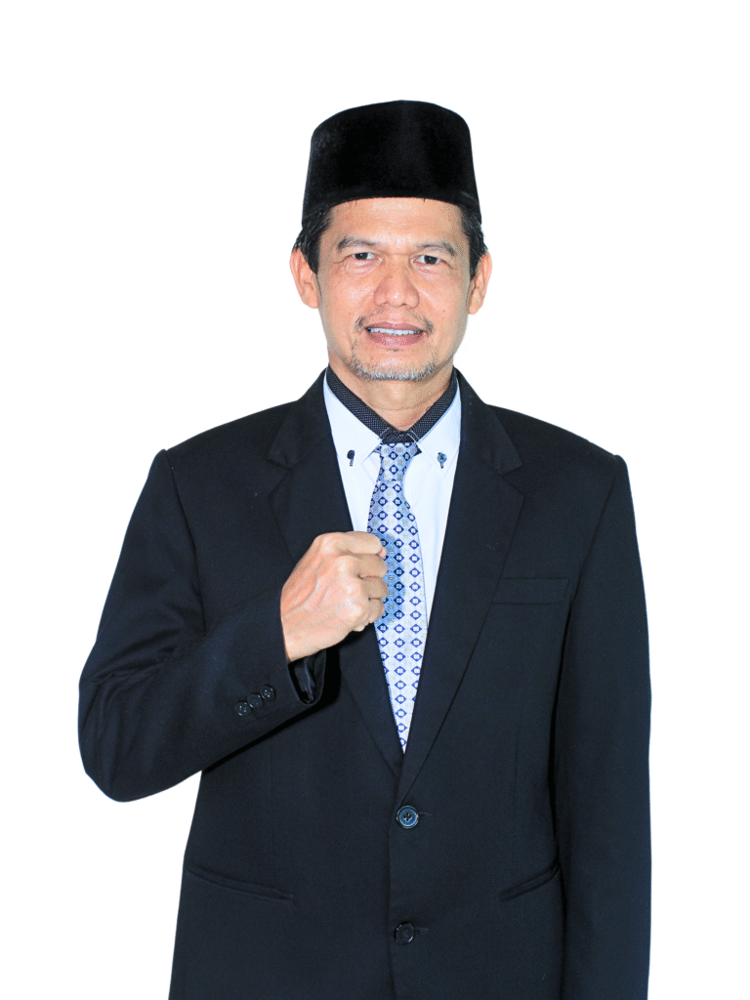
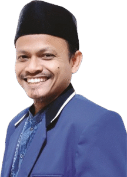

Pendidikan Al-Qur'an
- Tilawah
- Tahfidh
- Tafsir
- Tathbiq
- Tabligh
Membentuk generasi Qur'ani yang berakhlak mulia, berilmu, berjiwa pemimpin, dan berwawasan kebangsaan sejak 2005.
Sekilas
elTAHFIDH Indonesia adalah organisasi yang bertujuan mencetak 10.000 dai/da'iyah hafizh Qur'an, berakhlak Al-Qur'an, berilmu pengetahuan syariah, sosial dan teknologi, berwawasan kebangsaan dalam bingkai Negara Kesatuan Republik Indonesia serta ahlusunnah wal jamaah.
Tujuan tersebut diimplementasikan melalui lembaga pendidikan, organisasi otonom, unit usaha, dan cabang di berbagai daerah.
Sejarah
elTAHFIDH Indonesia lahir dari semangat membentuk generasi Qur'ani yang berakhlak mulia, memiliki fondasi keilmuan yang kuat, kapasitas kepemimpinan, serta semangat kebangsaan dalam bingkai Negara Kesatuan Republik Indonesia. Lembaga ini hadir sebagai wadah pembinaan generasi yang mewakili keberagaman suku dan daerah di Indonesia, dengan tujuan melahirkan kader umat yang berdaya saing dan berkontribusi bagi bangsa.
Cikal bakal elTAHFIDH berdiri pada tahun 2005 di Desa Cigombong, Kecamatan Cijeruk, Kabupaten Bogor, dengan nama Ma'had Salamah Litahfidzil Qur'an. Seiring perkembangannya, elTAHFIDH tumbuh dan berpusat di kawasan Jatisari, Cileungsi, Bogor, Jawa Barat. Di bawah kepemimpinan Dr. H. Jhon Edy Rahman, elTAHFIDH terus mengembangkan program strategis di bidang pendidikan Al-Qur'an, kaderisasi da'i, pembinaan keluarga, serta pendidikan Islam berstandar global.
Capaian
Program Utama
Jenjang
Pendidikan berkesinambungan dari usia dini hingga pendidikan tinggi.
Struktur Organisasi
Ditetapkan di Jakarta, 21 Maret 2026.

Founder & CEO
Operasional & Keuangan
GM
Humas & Kesekretariatan
PJ GM

Kemitraan, Usaha, Hukum & Ziswaf
GM
Teritorial
PJ GM
Pembangunan dan Pemeliharaan Sarana & Prasarana
PLT GM
Al-Qur'an
PJ GM
Kepemudaan
GM
Islamic Full Day School elTAHFIDH
Direktur
SMPQ elTAHFIDH
Direktur

SMAQ elTAHFIDH
Direktur
Program Da'i Hafal Qur'an
Direktur
Wakil Direktur: Ust. Mashadi Hariyanto, S.Pd., Al-Hafidh, DAN IV Kukkiwon

Pesantren Qur'an Akhwat
Direktur
Satuan Bisnis Unit (SBU)
Setiap unit dipimpin direktur atau ketua masing-masing.
Organisasi Kepemudaan dan Olahraga
Setiap unit dipimpin direktur atau ketua masing-masing.
STEI elTAHFIDH
Direktur
Wakil Direktur: Ustadzah Umi Hj. Zuriati, S.Pd., M.Ag.
Visi & Misi
Mencetak 10.000 Dai Hafal Qur'an yang berakhlak Qur'ani, memiliki kafaah syari'ah, berwawasan ilmu pengetahuan dan teknologi, berjiwa entrepreneur, mandiri, serta berijazah S-1 pada tahun 2045 (Indonesia Emas).
Qur'ani, cerdas, dan mandiri. Lihat informasi penerimaan murid baru atau tanyakan langsung melalui WhatsApp.